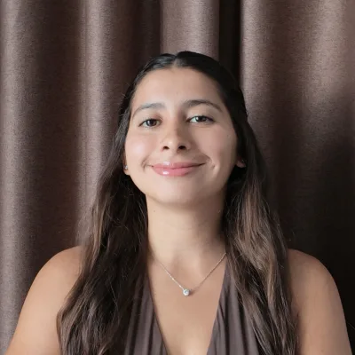
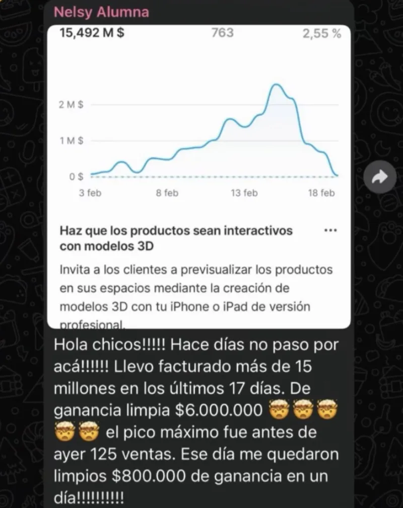
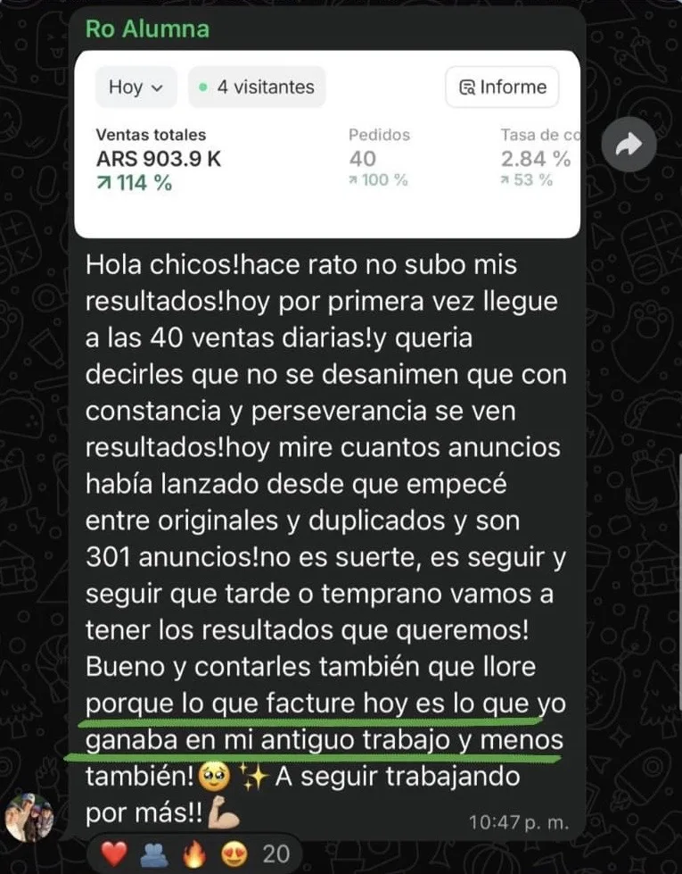
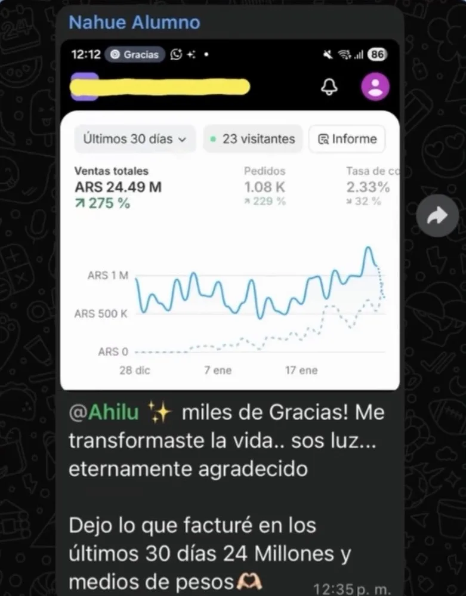
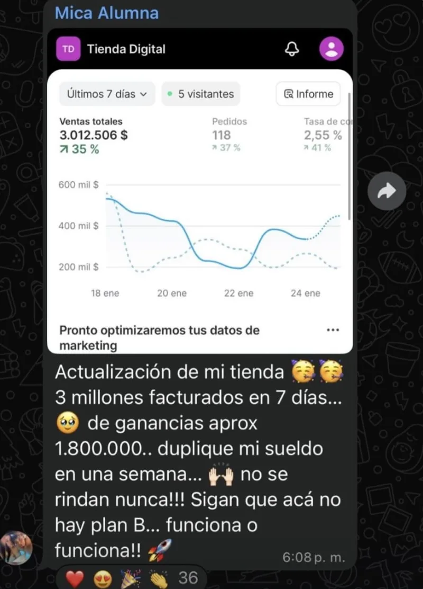
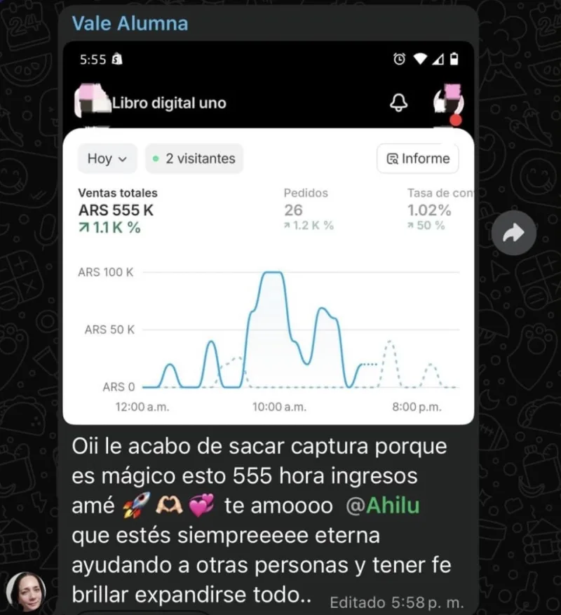
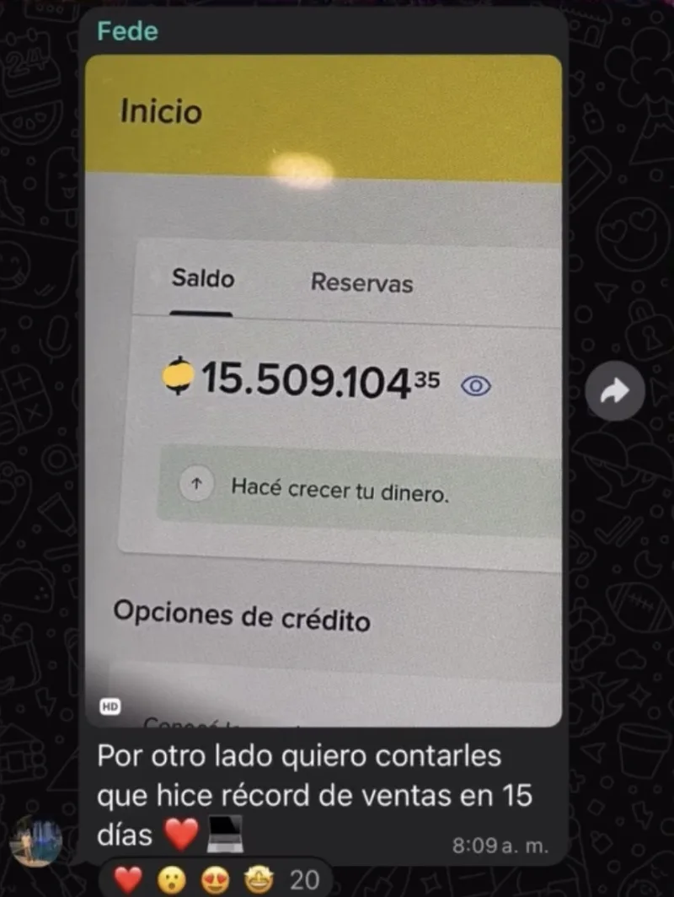
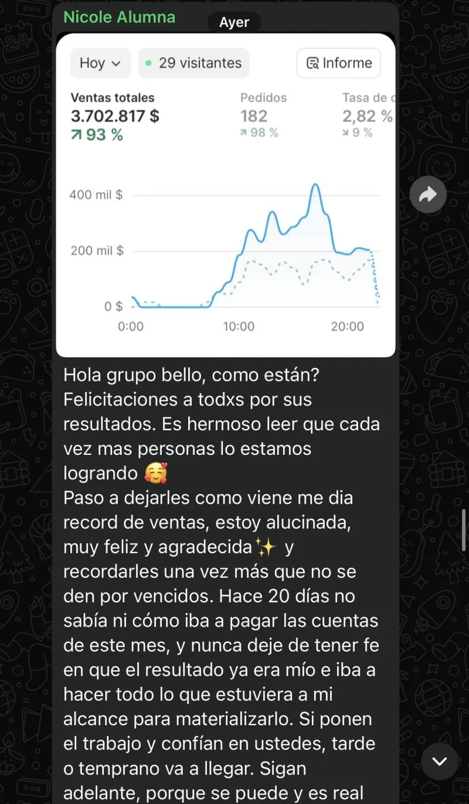
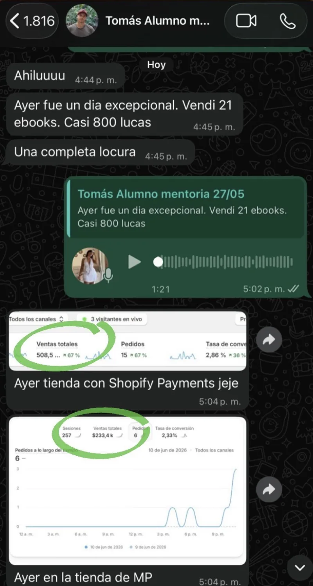

Y cómo podés hacer tus primeros $10.000 a $30.000 usando el mismo sistema — sin inventar un producto de cero, sin saber de tecnología, y sin pagar otra mentoría que solo te dé mentalidad.
Mirá este video de 3 minutos antes de anotarte
Martes 29 de Septiembre, 20:00 hs (Argentina). Gratis, en vivo, y con todo lo que necesitás para dar el siguiente paso.
Te cuento el sistema completo, tal cual lo uso hoy: qué vendo, cómo lo armo, y cómo lo escalo sin depender de que "me pegue" un producto.
Nada de teoría suelta. Te llevás las herramientas exactas que uso yo, para que las copies y las apliques directo.
Una selección de ideas y productos digitales con potencial para que sepas qué vender y puedas aprovechar al máximo esta última etapa del año.
Llevo 6 años emprendiendo en negocios digitales y, durante ese tiempo, probé prácticamente de todo para hacer dinero online. Hace 2 años conocí la venta de ebooks y mi vida cambió por completo. En mi primer año generé más de USD 500.000 vendiendo productos digitales. Este negocio me permitió cumplir mi sueño de viajar por el mundo y, sobre todo, tener la libertad que siempre quise.

Pasé de trabajar en McDonald's a conocer el ecommerce y enamorarme de este mundo. Empecé desde cero y llegué a facturar más de USD 200.000 en un mes. Con toda esa experiencia conocí los productos digitales y descubrí una forma mucho más simple y escalable de hacer ecommerce: vender ebooks en todo el mundo, sin stock ni envíos.
Hoy, juntas, creamos el Método Winner. Y el 29 de septiembre te vamos a enseñar, en una clase 100% gratuita, el método que usamos para crear y vender productos digitales de forma simple, rápida y escalable.








Porque queremos mostrarte el sistema completo, no un resumen. Si al final querés seguir trabajando con nosotras, te contamos cómo — pero aunque solo vengas a la clase, te vas con algo concreto para aplicar.
Anotate igual: el acceso te lo mandamos al grupo de WhatsApp, así que aunque no puedas en vivo vas a tener el link. Igual te recomendamos entrar en vivo, porque respondemos preguntas en el momento — y agendá el recordatorio en tu calendario para no perdértela.
Sí. Te mostramos desde cómo encontrar un producto hasta cómo escalarlo — sirve tanto si arrancás de cero como si ya vendés y estás estancada.
No. Te explicamos todo de cero, pensado para alguien que nunca usó estas herramientas.
Sumate al grupo de WhatsApp apenas te registrás: ahí te mandamos el link de acceso y los recordatorios antes de la clase. Agendate también el recordatorio en tu calendario.
Martes 29 de Septiembre, 20:00 hs (Argentina). Gratis, en vivo, y con todo lo que necesitás para dar el siguiente paso.